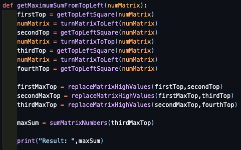

FLIPPING THE MATRIX
I used to follow the learning path from https://www.hackerrank.com/, in this opportunity I want to talk about the Flipping the Matrix problem, which is qualified as a medium level problem.
To solve this problem I had to do some research, because at the beginning I had some problems understanding the problem definition. After this research I understood the goal problem is to get maximum value from the left top location of a square array.
I found a lot of webpages but the most clear information for me is this webpage, the blogger propose to assign letters for each square section of the array, but I couldn’t understand the logic behind the letter distribution.
After expending some time in the problem definition and the blog solution I could get why this distribution was used, is because the blogger used the reverse functionality in the whole square, let me explain this using the next pictures:

At the end we can see the different positions of the target letters.
MY OWN SOLUTION
After realizing the reason for this letter distribution, I propose my own solution for this problem,
where I use the reverse functionality to move each quadrant to the target quadrant.
Using 3x3 target quadrant:
These methods below allows you to reverse the rows and columns as the images above shows:
The next method allows you compare two matrix and get a new matrix with max values per each position:
This last method sum all matrix position:
All this methods are used in this last method, where the solution is implemented:
References
https://medium.com/@mlgerardvla/hackerrank-flipping-the-matrix-javascript-7f945220ca1b
https://www.hackerrank.com/challenges/flipping-the-matrix/problem